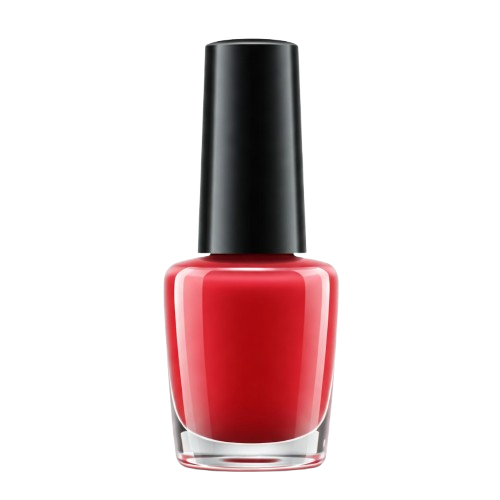
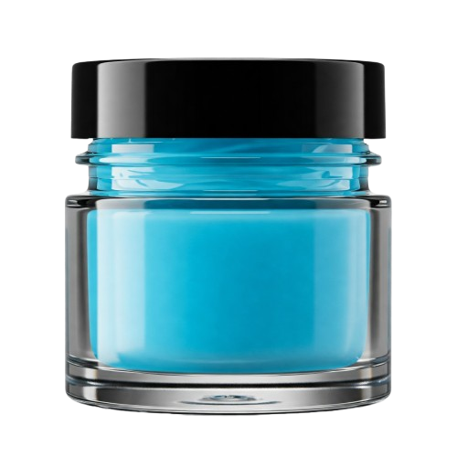
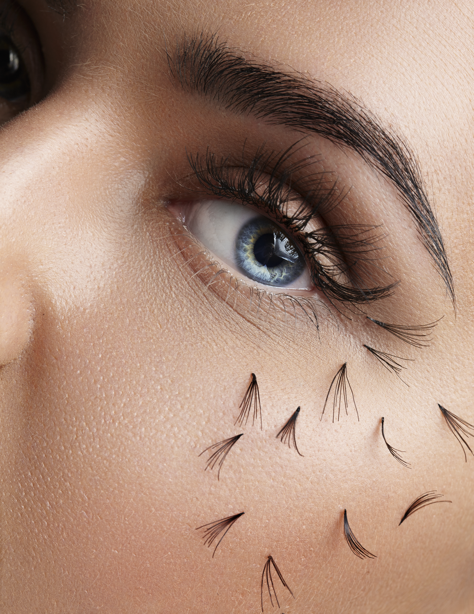

Aqui você encontra uma equipe de profissionais com alta expertise e paixão por realçar sua beleza. Cabeleireiros, manicures, maquiadores e especialistas dedicados a oferecer serviços personalizados e de qualidade, sempre atentos às últimas tendências.
Confie em nossa expertise para transformar sua beleza!


